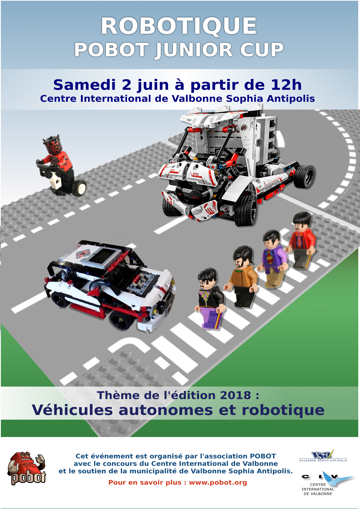
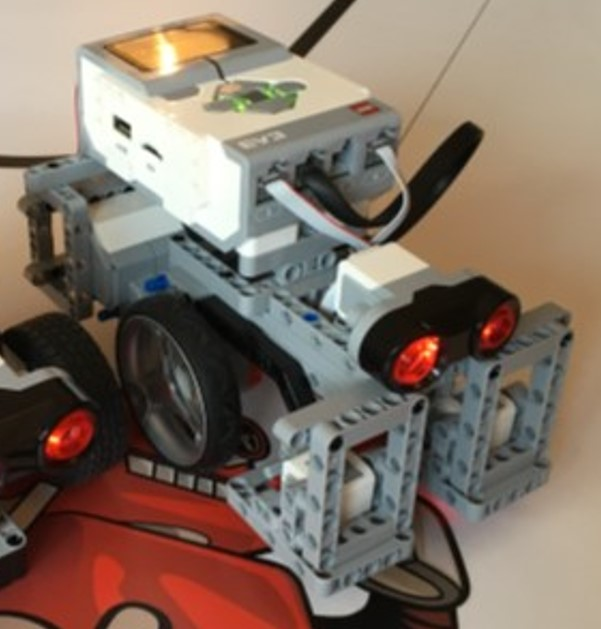
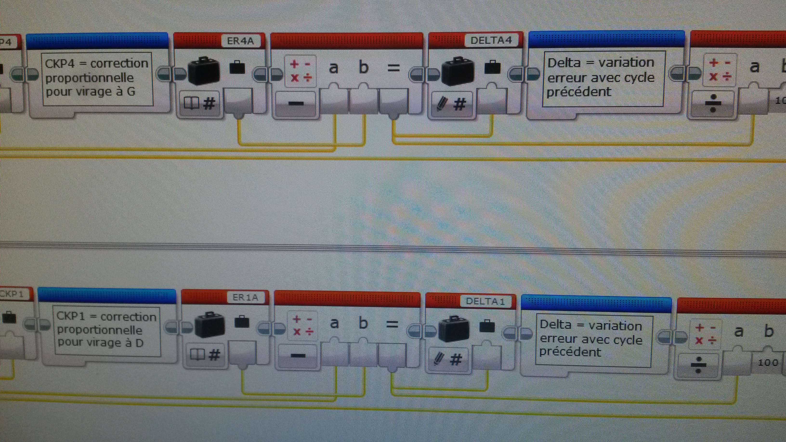
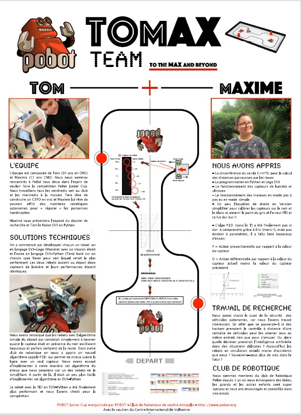

Présentation du concours
La Pobot Junior Cup est un trophée de robotique organisé dans le but d'encourager les vocations scientifiques et techniques de manière ludique. Le défi consiste à concevoir en équipe un robot capable de réaliser en totale autonomie une série d'épreuves complexes sur un plateau de jeu chronométré.

Conception Mécanique
L'étude a porté sur l'assemblage modulaire d'un châssis robotisé robuste. L'objectif était de garantir la fiabilité du suivi de ligne et de la détection des obstacles (réussite aux épreuves) sans pénaliser la vitesse du robot (épreuves chronométrées).

Démonstration de l'asservissement en temps réel
Intégration Systèmes
Le robot est équipé de capteurs agissant comme ses organes sensoriels. Leur agencement et leur câblage sont critiques pour la réactivité du système en temps réel.
- 1 capteur ultrason pour la détection d'obstacles.
- 2 capteurs de couleur pour la détection de la ligne.
Développement Logiciel
L'intelligence du robot repose sur des algorithmes d'asservissement développés sous l'environnement Mindstorm (Maxime) ou Python (Tom). La correction proportionnelle permet une navigation fluide et adaptative.
- Algorithme de suivi de ligne proportionnel.

Exposition au Centre International de Valbonne
La Pobot Junior Cup s'est clôturée par une journée d'épreuves au Centre International de Valbonne. Ce fut une immense fierté pour nous d'être lauréats du concours, validant ainsi nos choix et notre engagement après plusieurs mois d'investissement.
